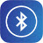
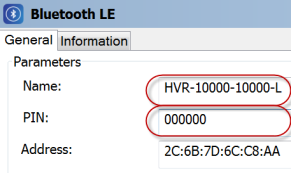
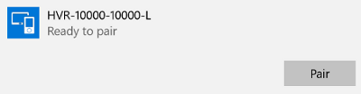
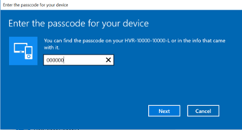
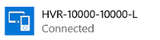
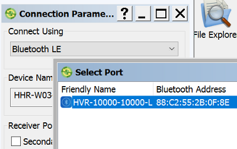

and
and To establish the first connection with GNSS receiver which contains Bluetooth LE module you need to pair with the receiver. To perform the pairing you need to know the name of the receiver Bluetooth LE module and PIN.
You can obtain these parameters, if you connect the receiver to TRU via Serial Port, Bluetooth or USB in the Receiver Managing mode and click and

to open the Bluetooth LE dialog:

You can do the pairing in the Windows Settings - Manage Bluetooth Devices dialog of your PC or Controller. The dialog displays all detected Bluetooth devices. Turn on the receiver, highlight it in the dialog and click the Pair button.

Enter the PIN of the receiver and click the Next button.

After that the PC or Controller pairs with the receiver and the dialog shows the "Connected" status for this device:

When you try to connect TRU to the GNSS receiver using Bluetooth LE connection, the Select Port dialog will display the name of the device.

Select the device and click the Connect button in the Connection Parameter dialog to establish connection with the receiver.